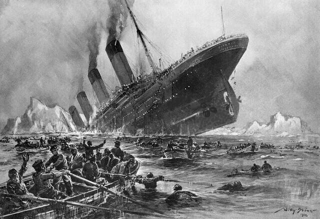

Agda Thorilda Viktoria Lindahl was born in Sweden in 1887 and around 1905, when she was seven, had emigrated to the USA with her mother, Hanna, and five siblings: Gustaf, Helge, Hugo, Vera and Vilma. The family had owned a tailor shop at Kommendörsgatan 16, Stockholm, Sweden and in 1904 her father died leaving them broke. Hanna decided to emigrate to America with her children, except 2 year old Helge, who was left with an aunt in Småland. While in the USA both Hugo and Gustaf got sick and died at a fairly young age.
Agda's mother, Hanna, got a job as a maid for George V. W. Duryea at 20 Marshall Street in Saranac Lake and Adga, when she was old enough, became a waitress. They saved their money and in January of 1912, at 25, Agda traveled to Stockholm to visit her uncle, August Lindahl, and to bring back her brother, Helge. She stayed there for three months. Helge refused to travel to the USA and Agda had to return alone. Agda boarded the Titanic at Southampton on Wednesday, April 10th as a third class passenger, ticket number 347071.
As the Titanic began to sink Agda boarded the second lifeboat to leave but spotted Augusta Lindblom, who was traveling back to Saranac Lake with her and gave Augusta her seat. She then went to the other side of the ship and found room on the last lifeboat to leave. As the Titanic went under it created a whirlpool which pulled Agda's lifeboat under and spilled the passengers into the sea. Agda stayed afloat long enough to call to an aquaintence she had met aboard ship, Carl Johnson, who was also in the water. She told him to contact her mother in Saranac Lake if he survived. Agda then sank and a few minutes later Carl was rescued. Agda's body was never found and the Mansion House Fund eventually awarded Hanna and Helge what in todays dollar would amount to $3,840. A remaining mystery is the identity and fate of Miss Augusta Lindblom, 45, the lady who was also traveling from Stockholm to Saranac Lake and who Agda gave up her seat on the lifeboat for. Could she have been Adga's Aunt?
Four more Titanic passengers with Saranac Lake connections were, Mrs. William Bucknell, who had a summer camp at Saranac Inn, Benjamin Guggenheim, who spent summers on Upper Saranac Lake and Isidore Straus and his wife, who were residents of Knollwood. Benjamin died and Mrs. Bucknell was saved. Mrs. Straus clung to her husband and opted to stay with him and both went down with the ship. Newspaper reports say that Mrs. Straus was smiling as she made that last decision.